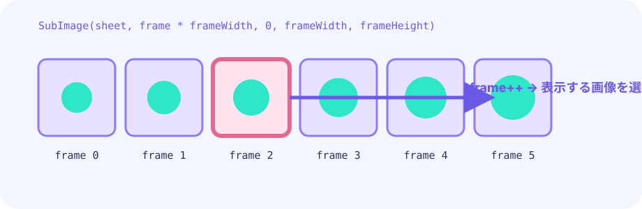

状態を決める
接地と速度からidle・run・airを選びます。
★★★☆☆ / PLAYABLE
止まる・走る・跳ぶ状態から表示フレームを選び、速度に合わせて絵を切り替えます。
はじめて読む人へ
PLAYABLEはその場で遊べる教材という印。横スクロールアクションは天次郎を横へ進めて跳ぶゲーム。走りアニメは足の絵を時間で切り替え、速さに応じて再生間隔を変えます。 PLAYABLEは『このページで実際に操作できる』という印です。
このページの1本
説明と次のコードを対応させてから、ゲームで変化を確かめよう。
frame := tick / frameDuration % frameCount

まず遊ぶ
止まる・走る・跳ぶ状態から表示フレームを選び、速度に合わせて絵を切り替えます。
DEEP DIVE
絵を毎回同じ形で表示すると、座標だけが滑って見えます。走っている間はtickを数え、数フレームごとに接地・踏み込み・蹴り出しを切り替えます。
接地と速度からidle・run・airを選びます。
tick / 7で、同じ絵を7フレーム保ちます。
着地時のつぶれや空中の伸びで動きを伝えます。
SYSTEM LAB
絵を毎回同じ形で表示すると、座標だけが滑って見えます。走っている間はtickを数え、数フレームごとに接地・踏み込み・蹴り出しを切り替えます。
START
GO + EBITENGINE
遊べるゲームから中心部分だけを抜き出します。
if !grounded { frame = airFrame } else if math.Abs(vx) > 0.4 { frame = (tick / 7) % 3 }数値を1つ変えて、見え方や難しさを比べよう。
tick / 7で、同じ絵を7フレーム保ちます。
着地時のつぶれや空中の伸びで動きを伝えます。
FEEDBACK